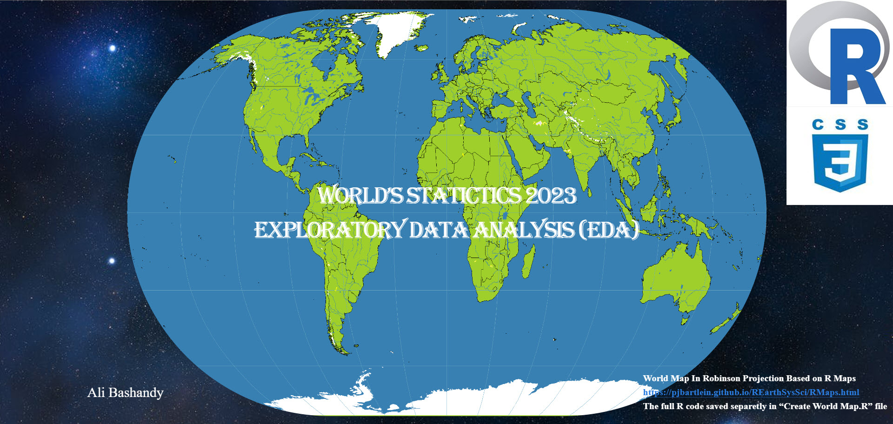
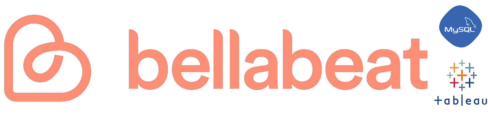
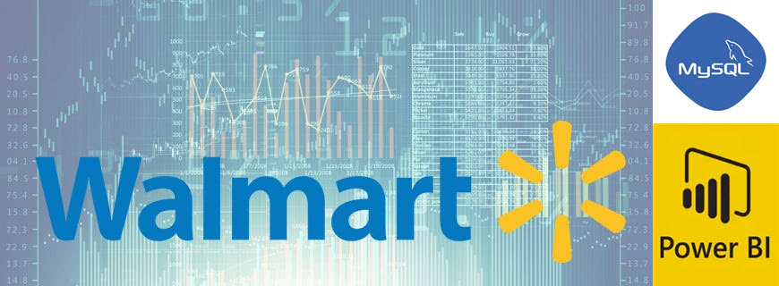
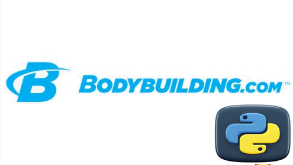

COVID-19 Global stats
In "SQL and Power-Bi"
This analysis based on COVID-19 dataset by Our World in Data.
With every country represented, the project focused on stats of cases, deaths, and vaccination
since the start of the pandemic till july 2024"
Global EDA Visualization
In "R and CSS"

This analysis based on Global Country Information
Data set 2023 by Nidula Elgiriyewithana found in kaggle
with public licence Attribution 4.0 International
(CC BY 4.0).
With every country represented, this data set offers
a complete global perspective on various aspects of nations,
enabling in-depth analyses and cross-country comparisons.
The final result is a report under the name "Global-Eda-2023.html"
Automating Crypto website API pull
In "Python"
In this project, I developed a Cryptocurrency Status Tracker
using Python and the CoinMarketCap API.
The primary goal was to create a tool that fetches
real-time data on various cryptocurrencies, providing insights
into their current market status, including prices,
market capitalization, and trading volumes.
Google Data Analytics Certification Capstone
In "SQL and Tableau"

This project was a part of Google analytics Certificate.
The main goal is to analyze smart device usage data in order to gain insight into how consumers use Bellabeat smart devices.
Walmart Sales data analysis
In "SQL, and Power-Bi"

In this project, I conducted a comprehensive analysis of Walmart’s sales data to
uncover valuable insights and trends. The primary objective was to understand the factors
influencing sales performance and to provide actionable recommendations for optimizing sales strategies.
BodyBuilding Web Scraping
In "Python"

In this project, I developed a web scraping tool using Python to extract valuable data
from Bodybuilding.com. The primary objective was to gather information on various fitness products,
user reviews, and workout plans to analyze trends and provide insights into the fitness industry.
Alex The Analyst Boot Camp
Excel, SQL, Power Bi, Python, and Tableau
I completed an intensive Data Analyst Bootcamp, where I gained hands-on experience
with essential tools and techniques used in the field of data analysis.
This bootcamp provided me with a comprehensive understanding of data manipulation,
analysis, and visualization.
{kind=link}
{kind=link}
{kind=link}
{kind=link}
{kind=link}
{kind=link}
{kind=link}